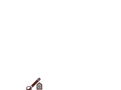

Add Building Tool
Tool Operation
- Select template in dialog.
- Click viewport to add points defining the building.
- Drag cubic handles to set gable angles.
- Double click or press enter to save.
- Esc = Cancel.
Context Menu
- Reverse Path - Change on what side of path building is drawn.
- Add to Path - Toggle whether new corners can be added.
- Side to Follow Path - Whether the path should define the front or back side.
- Templates - Toggle template dialog visibility.
Building Positioning
- The path should follow plot edge meaning a building facing the street has its facade on it while a building facing the yard usually has a firewall on it.